<title>FLUMEX</title>
<link rel="icon" type="image/png" href="img/favicon.png">
<link rel="apple-touch-icon" href="img/favicon.png">
<link rel="stylesheet" href="https://fonts.googleapis.com/css2?family=Source+Sans+3:wght@400;500;600;700;800&display=swap">
<style>
/* Layout: multi-page microsite, blueprint/technical-drafting register — white ground,
   navy ink, hairline rules and a fine grid motif under the hero, echoing FLUMEX's own
   wind-tunnel schematics. Deliberately single-theme (white paper), so the real logo and
   photos never compete with a dark shell. One sans-serif family for the whole page —
   no serif anywhere — weight and size carry the hierarchy instead. */
:root{
  --bg:#ffffff;
  --surface:#f5f8f9;
  --surface-2:#e9eff1;
  --fg:#101f2c;
  --fg-muted:#3d5163;
  --accent:#5c7a0e;
  --accent-ink:#f4ffd8;
  --accent-2:#0a5568;
  --border:rgba(16,31,44,0.14);
  --border-strong:rgba(16,31,44,0.28);
  --grid-line:rgba(16,31,44,0.06);
  color-scheme:light;

  --font-display:'Source Sans 3',system-ui,-apple-system,sans-serif;
  --font-body:'Source Sans 3',system-ui,-apple-system,sans-serif;
}

*{box-sizing:border-box;}
body{
  margin:0;
  background:var(--bg);
  color:var(--fg);
  font-family:var(--font-body);
  font-size:1.0625rem;
  line-height:1.6;
  -webkit-font-smoothing:antialiased;
}
img{max-width:100%;display:block;}
a{color:inherit;}
.wrap{
  width:100%;
  max-width:74rem;
  margin-inline:auto;
  padding-inline:clamp(16px,4vw,40px);
}
h1,h2,h3{
  font-family:var(--font-display);
  font-weight:700;
  letter-spacing:-0.01em;
  text-wrap:balance;
  margin:0;
}
.eyebrow{
  font-family:var(--font-body);
  font-weight:600;
  font-size:0.85rem;
  color:var(--fg-muted);
}
p{margin:0;}
.max-prose{max-width:62ch;}
.section{
  padding-block:clamp(48px,8vw,88px);
  border-top:1px solid var(--border);
}
.section-head{
  display:flex;
  flex-direction:column;
  gap:10px;
  margin-bottom:clamp(28px,5vw,44px);
}
.section-head h2{font-size:clamp(1.75rem,3.4vw,2.5rem);}
.tag-alt{background:var(--surface-2);}
:focus-visible{outline:2px solid var(--accent-2);outline-offset:3px;}

/* ---------- nav ---------- */
header.nav{
  position:sticky;
  top:env(safe-area-inset-top,0px);
  z-index:40;
  background:color-mix(in srgb, var(--bg) 88%, transparent);
  backdrop-filter:blur(10px);
  border-bottom:1px solid var(--border);
}
.nav-row{
  display:flex;
  align-items:center;
  justify-content:space-between;
  gap:16px;
  padding-block:12px;
}
.brand{
  display:flex;
  align-items:center;
  gap:10px;
  font-family:var(--font-body);
  font-weight:700;
  font-size:1.25rem;
  letter-spacing:0.01em;
  text-decoration:none;
  color:var(--fg);
}
.brand img{height:42px;width:42px;object-fit:contain;}
.brand .gnum-logo{height:32px;width:32px;}
.brand-divider{width:1px;height:28px;background:var(--border-strong);}
nav.links{
  display:flex;
  gap:clamp(10px,2vw,22px);
  flex-wrap:wrap;
  font-size:0.9rem;
}
nav.links a{
  text-decoration:none;
  color:var(--fg-muted);
  padding:6px 2px;
  border-bottom:2px solid transparent;
}
nav.links a:hover{color:var(--fg);border-color:var(--accent-2);}
nav.links a.is-current{color:var(--fg);border-color:var(--accent);}
@media (max-width:760px){
  nav.links{display:none;}
}

/* ---------- page switching ---------- */
.page{display:none;}
.page.is-active{display:block;}

/* ---------- hero ---------- */
.hero{
  padding-block:clamp(40px,7vw,72px) clamp(28px,5vw,56px);
  position:relative;
  overflow:hidden;
}
.hero::before{
  content:"";
  position:absolute;
  inset:0;
  z-index:-1;
  pointer-events:none;
  background-image:
    linear-gradient(var(--grid-line) 1px, transparent 1px),
    linear-gradient(90deg, var(--grid-line) 1px, transparent 1px);
  background-size:34px 34px;
  background-position:center -1px;
  -webkit-mask-image:linear-gradient(180deg, #000 40%, transparent 92%);
  mask-image:linear-gradient(180deg, #000 40%, transparent 92%);
}
.hero-grid{
  display:grid;
  grid-template-columns:1.1fr 0.9fr;
  gap:clamp(28px,4vw,56px);
  align-items:center;
  position:relative;
}
@media (max-width:860px){
  .hero-grid{grid-template-columns:1fr;}
}
.hero h1{
  font-size:clamp(2.3rem,5vw,3.7rem);
  line-height:1.05;
  margin-top:14px;
}
.hero .lede{
  margin-top:20px;
  font-size:1.1rem;
  color:var(--fg-muted);
}
.cta-row{
  display:flex;
  gap:14px;
  flex-wrap:wrap;
  margin-top:30px;
}
.btn{
  font-family:var(--font-body);
  font-weight:600;
  font-size:0.95rem;
  padding:12px 22px;
  border-radius:3px;
  text-decoration:none;
  display:inline-flex;
  align-items:center;
  gap:8px;
  border:1px solid transparent;
  cursor:pointer;
}
.btn-primary{background:var(--accent);color:var(--accent-ink);}
.btn-primary:hover{filter:brightness(1.08);}
.btn-ghost{border-color:var(--border-strong);color:var(--fg);background:transparent;}
.btn-ghost:hover{border-color:var(--accent-2);color:var(--accent-2);}

.hero-figure{
  position:relative;
  border-radius:4px;
  overflow:hidden;
  border:1px solid var(--border);
  aspect-ratio:4/5;
}
.hero-figure img{width:100%;height:100%;object-fit:cover;}
.hero-figure figcaption{
  position:absolute;
  inset:auto 0 0 0;
  background:linear-gradient(0deg, rgba(4,10,15,0.88), rgba(4,10,15,0));
  color:#eef4f3;
  padding:34px 16px 14px;
  font-size:0.8rem;
  font-family:var(--font-body);
  letter-spacing:0.02em;
}

.stat-strip{
  margin-top:clamp(36px,5vw,56px);
  display:grid;
  grid-template-columns:repeat(4,1fr);
  border:1px solid var(--border);
  border-radius:4px;
  overflow:hidden;
}
.stat-strip div{
  padding:16px 14px;
  border-left:1px solid var(--border);
}
.stat-strip div:first-child{border-left:none;}
.stat-strip .k{
  display:block;
  font-family:var(--font-body);
  font-size:0.78rem;
  color:var(--fg-muted);
}
.stat-strip .v{
  display:block;
  margin-top:4px;
  font-family:var(--font-body);
  font-weight:700;
  font-size:1.2rem;
}
@media (max-width:640px){
  .stat-strip{grid-template-columns:repeat(2,1fr);}
  .stat-strip div:nth-child(3){border-left:none;}
}

/* ---------- generic cards / grids ---------- */
.grid-2{display:grid;grid-template-columns:1fr 1fr;gap:20px;}
.grid-3{display:grid;grid-template-columns:repeat(3,1fr);gap:20px;}
.grid-4{display:grid;grid-template-columns:repeat(4,1fr);gap:16px;}
@media (max-width:760px){
  .grid-2,.grid-3,.grid-4{grid-template-columns:1fr;}
}
@media (min-width:761px) and (max-width:980px){
  .grid-3{grid-template-columns:repeat(2,1fr);}
  .grid-4{grid-template-columns:repeat(2,1fr);}
}

.card{
  background:var(--surface);
  border:1px solid var(--border);
  border-radius:4px;
  padding:22px;
}
.card h3{font-size:1.15rem;margin-bottom:10px;font-weight:700;font-family:var(--font-body);}
.card p{color:var(--fg-muted);font-size:0.96rem;}
.card .label{
  font-family:var(--font-body);
  font-weight:600;
  font-size:0.85rem;
  color:var(--fg-muted);
  display:block;
  margin-bottom:10px;
}

/* objetivos */
.obj-list{list-style:none;margin:0;padding:0;display:flex;flex-direction:column;gap:14px;}
.obj-list li{
  display:flex;
  gap:14px;
  align-items:flex-start;
  padding-bottom:14px;
  border-bottom:1px solid var(--border);
}
.obj-list li:last-child{border-bottom:none;padding-bottom:0;}
.obj-list .mark{
  flex:none;
  width:8px;height:8px;
  border-radius:50%;
  background:var(--accent);
  margin-top:9px;
}
.obj-list p{color:var(--fg);}

/* enfoque */
.enfoque-grid{
  display:grid;
  grid-template-columns:repeat(3,1fr);
  gap:1px;
  background:var(--border);
  border:1px solid var(--border);
  border-radius:4px;
  overflow:hidden;
}
@media (max-width:760px){.enfoque-grid{grid-template-columns:1fr;}}
@media (min-width:761px) and (max-width:980px){.enfoque-grid{grid-template-columns:repeat(2,1fr);}}
.enfoque-grid div{
  background:var(--surface);
  padding:24px;
  font-size:0.98rem;
}
.enfoque-grid .q-index{
  font-family:var(--font-body);
  color:var(--accent-2);
  font-size:0.78rem;
  display:block;
  margin-bottom:10px;
}

/* lineas de investigacion */
.tag-grid{display:flex;flex-wrap:wrap;gap:10px;}
.tag-pill{
  border:1px solid var(--border-strong);
  border-radius:100px;
  padding:9px 18px;
  font-size:0.9rem;
  font-family:var(--font-body);
}

/* timeline / proyectos */
.timeline{
  position:relative;
  padding-left:28px;
  border-left:1px solid var(--border-strong);
  display:flex;
  flex-direction:column;
  gap:clamp(36px,5vw,52px);
}
.timeline-item{position:relative;}
.timeline-item::before{
  content:"";
  position:absolute;
  left:-33.5px;
  top:6px;
  width:11px;height:11px;
  border-radius:50%;
  background:var(--bg);
  border:2px solid var(--accent);
}
.timeline-item.is-active::before{background:var(--accent);}
.timeline-head{
  display:flex;
  flex-wrap:wrap;
  align-items:baseline;
  gap:12px;
  margin-bottom:8px;
}
.timeline-year{
  font-family:var(--font-body);
  color:var(--accent-2);
  font-size:0.95rem;
}
.status-chip{
  font-family:var(--font-body);
  font-weight:600;
  font-size:0.78rem;
  padding:3px 10px;
  border-radius:100px;
  background:var(--surface-2);
  border:1px solid var(--border);
  color:var(--fg);
}
.status-chip.active{color:var(--accent-ink);background:var(--accent);border-color:var(--accent);}
.timeline-item h3{font-size:1.3rem;font-family:var(--font-body);font-weight:700;max-width:52ch;}
.timeline-item .src{
  display:block;
  margin-top:8px;
  color:var(--fg-muted);
  font-size:0.85rem;
}
.proj-media{
  margin-top:18px;
  display:grid;
  grid-template-columns:repeat(3,1fr);
  gap:10px;
}
@media (max-width:760px){.proj-media{grid-template-columns:1fr 1fr;}}
.proj-media figure{margin:0;border:1px solid var(--border);border-radius:4px;overflow:hidden;}
.proj-media img{width:100%;height:150px;object-fit:cover;}
.proj-media figcaption{
  font-family:var(--font-body);
  font-size:0.68rem;
  color:var(--fg-muted);
  padding:8px 10px;
  border-top:1px solid var(--border);
}

/* labs spec sheet */
.spec-list{display:flex;flex-direction:column;}
.spec-row{
  display:grid;
  grid-template-columns:1fr 2fr;
  gap:20px;
  padding-block:18px;
  border-bottom:1px solid var(--border);
}
.spec-row:last-child{border-bottom:none;}
@media (max-width:640px){.spec-row{grid-template-columns:1fr;gap:6px;}}
.spec-row dt{font-family:var(--font-body);font-size:0.85rem;color:var(--accent-2);}
.spec-row dd{margin:0;color:var(--fg-muted);}
.spec-row dd b{color:var(--fg);font-weight:600;}

/* metodologia */
.role-grid{display:grid;grid-template-columns:repeat(3,1fr);gap:18px;}
@media (max-width:760px){.role-grid{grid-template-columns:1fr;}}
.role-grid .num{
  font-family:var(--font-body);
  font-weight:800;
  font-size:2rem;
  color:var(--accent);
  display:block;
  margin-bottom:6px;
}

/* integrantes */
.person-card{
  display:flex;
  gap:16px;
  align-items:flex-start;
  padding:22px;
  background:var(--surface);
  border:1px solid var(--border);
  border-radius:4px;
}
.avatar{
  flex:none;
  width:64px;height:64px;
  border-radius:50%;
  overflow:hidden;
  border:1px solid var(--border-strong);
}
.avatar img{width:100%;height:100%;object-fit:cover;}
.avatar.badge{background:var(--surface-2);}
.person-card h3{font-size:1.05rem;margin-bottom:2px;}
.person-role{
  font-family:var(--font-body);
  font-weight:600;
  font-size:0.85rem;
  color:var(--accent-2);
}
.person-activity{
  display:block;
  margin-top:8px;
  font-family:var(--font-body);
  font-size:0.86rem;
  color:var(--fg-muted);
  line-height:1.5;
}
.person-mail{
  display:inline-block;
  margin-top:8px;
  font-family:var(--font-body);
  font-size:0.82rem;
  color:var(--fg-muted);
}
.placeholder-card{
  border-style:dashed;
  border-color:var(--border-strong);
  background:transparent;
}
.placeholder-card .avatar{
  display:flex;align-items:center;justify-content:center;
  font-family:var(--font-body);
  color:var(--fg-muted);
  font-size:0.7rem;
  background:var(--surface-2);
}
.placeholder-card h3,
.placeholder-card .person-role,
.placeholder-card .person-mail{color:var(--fg-muted);}
.note-block{
  margin-top:22px;
  padding:16px 18px;
  border-left:3px solid var(--accent-2);
  background:var(--surface);
  font-size:0.92rem;
  color:var(--fg-muted);
  border-radius:0 4px 4px 0;
}

/* unete */
.step-list{counter-reset:step;list-style:none;margin:0;padding:0;}
.step-list li{
  counter-increment:step;
  display:grid;
  grid-template-columns:auto 1fr;
  gap:16px;
  padding-block:16px;
  border-bottom:1px solid var(--border);
}
.step-list li:last-child{border-bottom:none;}
.step-list li::before{
  content:counter(step,decimal-leading-zero);
  font-family:var(--font-body);
  color:var(--accent);
  font-size:0.95rem;
  padding-top:2px;
}
.step-list b{display:block;margin-bottom:3px;}
.step-list span{color:var(--fg-muted);font-size:0.95rem;}

/* contacto */
.contact-row{
  display:flex;
  align-items:center;
  justify-content:space-between;
  gap:14px;
  flex-wrap:wrap;
  padding:16px 18px;
  border:1px solid var(--border);
  border-radius:4px;
  background:var(--surface);
}
.contact-row + .contact-row{margin-top:12px;}
.contact-row .addr{font-family:var(--font-body);font-size:0.95rem;}
.copy-btn{
  font-family:var(--font-body);
  font-size:0.82rem;
  font-weight:600;
  padding:8px 14px;
  border-radius:3px;
  border:1px solid var(--border-strong);
  background:transparent;
  color:var(--fg);
  cursor:pointer;
}
.copy-btn:hover{border-color:var(--accent-2);color:var(--accent-2);}
.copy-btn[data-copied="true"]{border-color:var(--accent);color:var(--accent);}

/* footer */
footer{
  border-top:1px solid var(--border);
  padding-block:36px 44px;
}
.footer-row{
  display:flex;
  align-items:center;
  justify-content:space-between;
  gap:20px;
  flex-wrap:wrap;
}
.footer-row img{height:42px;width:auto;filter:invert(1) brightness(0.15);}
.footer-meta{
  font-family:var(--font-body);
  font-size:0.78rem;
  color:var(--fg-muted);
  text-align:right;
}
/* expanded project media */
.media-block{margin-top:22px;}
.media-block .cap{
  font-family:var(--font-body);
  font-size:0.78rem;
  letter-spacing:0.04em;
  color:var(--fg-muted);
  margin-bottom:10px;
}
.video-grid{display:grid;grid-template-columns:1fr 1fr;gap:14px;}
@media (max-width:760px){.video-grid{grid-template-columns:1fr;}}
.video-figure{margin:0;border:1px solid var(--border);border-radius:4px;overflow:hidden;background:#000;}
.video-figure video{width:100%;display:block;}
.video-figure figcaption{
  font-family:var(--font-body);
  font-size:0.68rem;
  color:var(--fg-muted);
  padding:8px 10px;
  border-top:1px solid var(--border);
  background:var(--surface);
}
.credit-line{
  margin-top:16px;
  padding:14px 16px;
  border:1px dashed var(--border-strong);
  border-radius:4px;
  font-family:var(--font-body);
  font-size:0.8rem;
  color:var(--fg-muted);
  line-height:1.8;
}
.credit-line b{color:var(--fg);font-weight:600;}
.spinoff-card{
  margin-top:22px;
  display:grid;
  grid-template-columns:1fr 1.1fr;
  border:1px solid var(--border);
  border-radius:4px;
  overflow:hidden;
  background:var(--surface);
}
@media (max-width:760px){.spinoff-card{grid-template-columns:1fr;}}
.spinoff-card img{width:100%;height:100%;min-height:220px;object-fit:cover;display:block;}
.spinoff-body{padding:26px;display:flex;flex-direction:column;gap:12px;justify-content:center;}
.spinoff-body h3{font-size:1.3rem;}
.spinoff-body p{color:var(--fg-muted);}
</style>

<header class="nav">
  <div class="wrap nav-row">
    <a class="brand" href="/" data-page="inicio">
      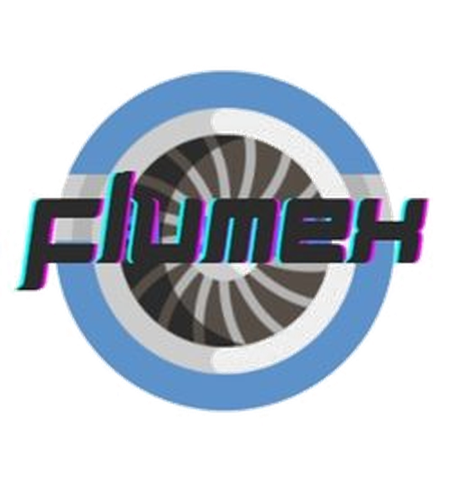
      <span class="brand-divider" aria-hidden="true"></span>
      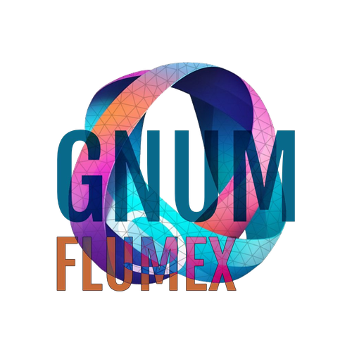
      <span>FLUMEX</span>
    </a>
    <nav class="links">
      <a href="/" data-page="inicio">Inicio</a>
      <a href="/quienes-somos/" data-page="quienes-somos">Quiénes somos</a>
      <a href="/proyectos/" data-page="proyectos">Proyectos</a>
      <a href="/laboratorios/" data-page="laboratorios">Laboratorios</a>
      <a href="/integrantes/" data-page="integrantes">Integrantes</a>
      <a href="/unete/" data-page="unete">Únete</a>
      <a href="/contacto/" data-page="contacto">Contacto</a>
    </nav>
  </div>
</header>

<main id="top">

<div class="page" data-page="inicio" id="page-inicio">
  <section class="hero">
    <div class="wrap hero-grid">
      <div>
        <span class="eyebrow">GNUM · FLUMEX — Facultad de Ingeniería, UNAL Sede Bogotá</span>
        <h1>Mecánica de fluidos,<br>del modelo al túnel de viento.</h1>
        <p class="lede max-prose">FLUMEX es el primer semillero de mecánica de fluidos de la Universidad Nacional de Colombia, sede Bogotá. Aplicamos la aerodinámica y la hidrodinámica a la ingeniería mediante modelos matemáticos, experimentación y simulación computacional.</p>
        <div class="cta-row">
          <a class="btn btn-primary" href="/proyectos/" data-page="proyectos">Ver proyectos</a>
          <a class="btn btn-ghost" href="/unete/" data-page="unete">Cómo unirte</a>
        </div>
      </div>
      <figure class="hero-figure">
        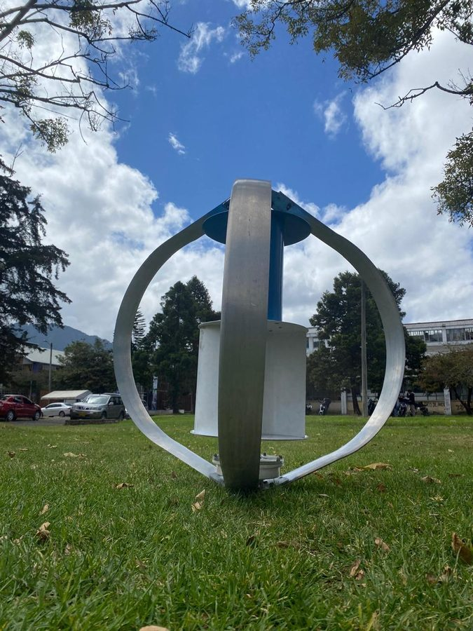
        <figcaption>Turbina Savonius&#8209;Darrieus · ensayo en campus · proyecto 2025&#8211;2026</figcaption>
      </figure>
    </div>

    <div class="wrap">
      <div class="stat-strip">
        <div><span class="k">Fundación</span><span class="v">16.12.2020</span></div>
        <div><span class="k">Código semillero</span><span class="v">60</span></div>
        <div><span class="k">Dependencia</span><span class="v">Ing. Mecánica y Mecatrónica</span></div>
        <div><span class="k">Estado</span><span class="v">Activo</span></div>
      </div>
    </div>
  </section>
</div>

<div class="page" data-page="quienes-somos" id="page-quienes-somos">
  <section class="section" id="quienes-somos">
    <div class="wrap">
      <div class="section-head">
        <span class="eyebrow">Quiénes somos</span>
        <h2>Un semillero nacido de una pregunta simple.</h2>
        <p class="max-prose" style="color:var(--fg-muted)">Cuando FLUMEX se propuso en 2020, ningún semillero estudiantil de la UNAL sede Bogotá se dedicaba a la mecánica de fluidos. El grupo nace para llenar ese vacío: llevar la aerodinámica, la hidrodinámica y las ciencias térmicas del aula al laboratorio.</p>
      </div>

      <div class="grid-2">
        <div class="card">
          <span class="label">Razón de ser</span>
          <p style="color:var(--fg)">Generar conocimiento en las ramas de aerodinámica e hidráulica de la mecánica de fluidos, y desarrollar innovaciones en esa rama de la ingeniería a nivel Colombia.</p>
        </div>
        <div class="card">
          <span class="label">Misión</span>
          <p style="color:var(--fg)">Estudiar los fenómenos de la mecánica de fluidos —especialmente aerodinámica e hidráulica— por medio de modelos y prácticas experimentales, con el apoyo de simulaciones computacionales.</p>
        </div>
      </div>

      <div class="card" style="margin-top:20px;">
        <span class="label">Visión fundacional · redactada en 2021</span>
        <p style="color:var(--fg)">Que FLUMEX se posicione en Bogotá como uno de los semilleros importantes en mecánica de fluidos, habiendo publicado artículos científicos de divulgación en el área y hecho uso del capital humano y las instalaciones de la Universidad Nacional de Colombia, sede Bogotá.</p>
      </div>

      <div class="card" style="margin-top:20px;">
        <span class="label">Justificación</span>
        <p style="color:var(--fg)">El enfoque del semillero es fundamental para dar soluciones tangibles a problemas de generación y distribución de energía, análisis hidrodinámico y aerodinámico de maquinaria, y desarrollo de prototipos experimentales. En una región con proyección de crecimiento en generación hidroeléctrica, y en línea con el ODS 9 de la ONU ("industria, innovación e infraestructura") y el ODS 7 ("energía asequible, segura, sostenible y moderna"), el trabajo de FLUMEX es pertinente para el desarrollo tecnológico del país.</p>
      </div>
    </div>
  </section>

  <section class="section" id="objetivos">
    <div class="wrap">
      <div class="section-head">
        <span class="eyebrow">Objetivos</span>
        <h2>Qué nos proponemos.</h2>
      </div>
      <div class="grid-2">
        <div class="card">
          <span class="label">Objetivo general</span>
          <p style="color:var(--fg)">Analizar, estudiar y aplicar los conceptos y fenómenos de la mecánica de fluidos y sus ramas —especialmente hidrodinámica y aerodinámica— mediante la implementación de modelos matemáticos y prácticas experimentales soportadas en el análisis de simulaciones computacionales.</p>
        </div>
        <div class="card">
          <span class="label">Objetivos específicos</span>
          <ul class="obj-list">
            <li><span class="mark"></span><p>Estudiar aerodinámica, hidrodinámica, transferencia de calor y termodinámica, generando innovaciones en dichos campos.</p></li>
            <li><span class="mark"></span><p>Implementar modelos matemáticos de fenómenos de fluidos que apoyen los proyectos del semillero.</p></li>
            <li><span class="mark"></span><p>Realizar prácticas experimentales como complemento a los modelos teóricos.</p></li>
            <li><span class="mark"></span><p>Desarrollar prototipos que permitan validar los modelos teóricos de las investigaciones.</p></li>
            <li><span class="mark"></span><p>Organizar eventos de difusión de resultados y temas de interés del semillero.</p></li>
            <li><span class="mark"></span><p>Publicar al menos dos veces al año: artículos científicos, ponencias en congresos o informes.</p></li>
          </ul>
        </div>
      </div>
    </div>
  </section>

  <section class="section" id="enfoque">
    <div class="wrap">
      <div class="section-head">
        <span class="eyebrow">Enfoque</span>
        <h2>Las preguntas que guían la investigación.</h2>
      </div>
      <div class="enfoque-grid">
        <div><span class="q-index">01</span>¿Cómo impactar positivamente el campus con el uso y las aplicaciones de la mecánica de fluidos?</div>
        <div><span class="q-index">02</span>¿Por qué son importantes las ciencias térmicas para la ingeniería y la física?</div>
        <div><span class="q-index">03</span>¿Cómo ayudar al desarrollo del país a través de la mecánica de fluidos?</div>
        <div><span class="q-index">04</span>¿Qué nuevas aplicaciones se pueden dar a la turbomaquinaria existente para mejorar condiciones de vida?</div>
        <div><span class="q-index">05</span>¿Cómo utilizar la mecánica de fluidos y las leyes de la termodinámica para la transformación de energías?</div>
        <div><span class="q-index">06</span>¿Qué proyectos activos en la universidad se beneficiarían de la mecánica de fluidos?</div>
      </div>
    </div>
  </section>

  <section class="section" id="lineas">
    <div class="wrap">
      <div class="section-head">
        <span class="eyebrow">Líneas de investigación</span>
        <h2>Ocho frentes de trabajo.</h2>
      </div>
      <p style="color:var(--fg-muted);max-width:60ch;margin-bottom:18px;">Para el trabajo de simulación, el semillero combina software comercial (Ansys) con herramientas de código abierto (OpenFOAM), según las necesidades de cada proyecto.</p>
      <div class="tag-grid">
        <span class="tag-pill">Modelado de dinámica de fluidos</span>
        <span class="tag-pill">Ventilación en recintos cerrados</span>
        <span class="tag-pill">Generación de energía</span>
        <span class="tag-pill">Análisis y diseño de turbomaquinaria</span>
        <span class="tag-pill">Estudio de hidrodinámica</span>
        <span class="tag-pill">Estudio de aerodinámica</span>
        <span class="tag-pill">Dinámica de fluidos computacional (CFD)</span>
        <span class="tag-pill">Modelado de sistemas térmicos</span>
      </div>
    </div>
  </section>
</div>

<div class="page" data-page="proyectos" id="page-proyectos">
  <section class="section" id="proyectos">
    <div class="wrap">
      <div class="section-head">
        <span class="eyebrow">Proyectos</span>
        <h2>De la ventilación anti-Covid a la energía eólica.</h2>
        <p class="max-prose" style="color:var(--fg-muted)">Tres convocatorias, tres generaciones de integrantes, una misma línea: llevar un problema real al modelo, al prototipo y a la validación experimental.</p>
      </div>

      <div class="timeline">
        <div class="timeline-item">
          <div class="timeline-head">
            <span class="timeline-year">2021 – 2022</span>
            <span class="status-chip">Finalizado</span>
          </div>
          <h3>Sistema de ventilación y control para la disminución de riesgo de contagio de Covid-19</h3>
          <span class="src">Convocatoria de Innovación "Soluciones con ingenio para el cambio" — Facultad de Ingeniería, 2020</span>
        </div>

        <div class="timeline-item">
          <div class="timeline-head">
            <span class="timeline-year">2022 – 2023</span>
            <span class="status-chip">Finalizado</span>
          </div>
          <h3>Sistema de ventilación, control y simulación para disminuir la transmisión de enfermedades por aerosoles en espacios cerrados</h3>
          <span class="src">Convocatoria UN Ingnova "Soluciones con ingenio para el cambio", proyecto código 53772 — Convocatoria de Proyectos para el Fortalecimiento de la Innovación en la UNAL: Prototipos y Experiencias Piloto 2019–2021 (segunda cohorte)</span>
          <p style="margin-top:10px;color:var(--fg-muted);font-size:0.95rem;">Un sistema de ductos, extracción y sensores de CO₂ que reduce el riesgo de contagio por aerosoles en salones cerrados sin recircular el aire, validado con simulación CFD y probado en el salón 115 del edificio 453.</p>

          <div class="media-block">
            <span class="cap">Diseño del sistema</span>
            <div class="proj-media">
              <figure>
                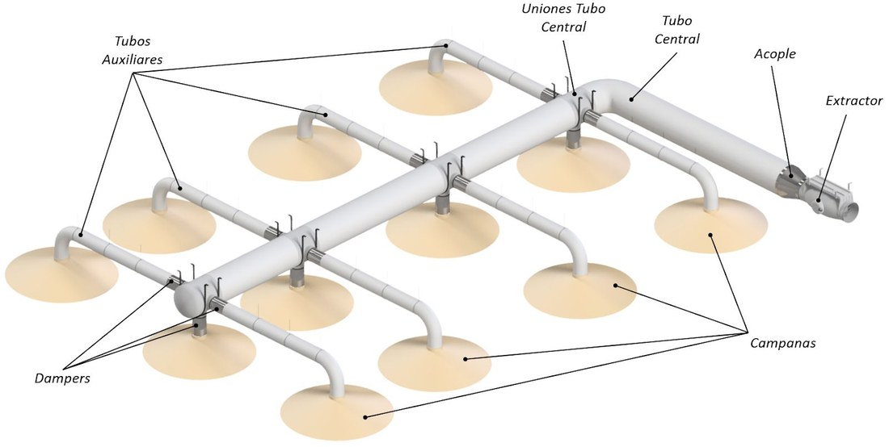
                <figcaption>Campanas, ductos y extractor</figcaption>
              </figure>
              <figure>
                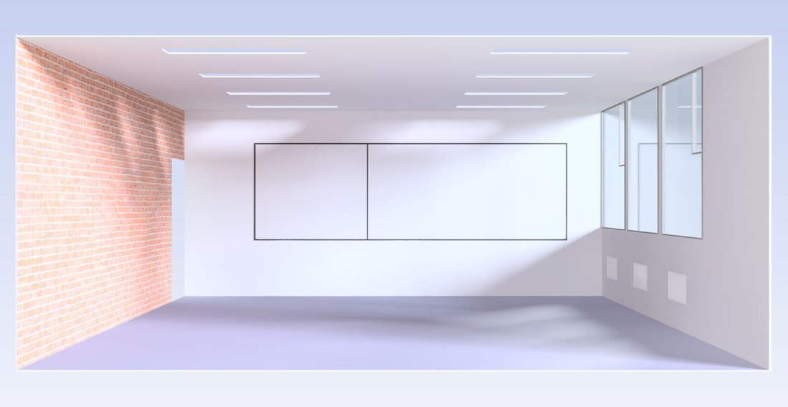
                <figcaption>Sensores CO₂, anemómetro y monitor</figcaption>
              </figure>
              <figure>
                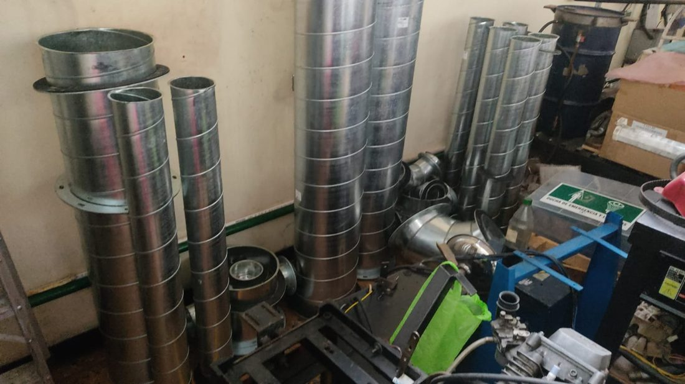
                <figcaption>Ductos del sistema, en taller</figcaption>
              </figure>
            </div>
          </div>

          <div class="media-block">
            <span class="cap">Resultados de la simulación CFD — comportamiento del aire en el aula</span>
            <div class="proj-media">
              <figure>
                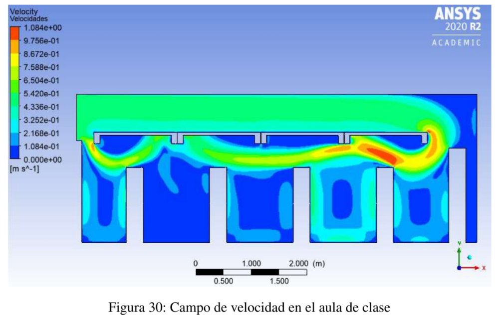
                <figcaption>Campo de velocidad en el aula</figcaption>
              </figure>
              <figure>
                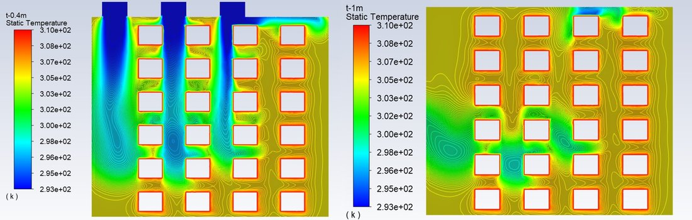
                <figcaption>Temperatura estática, dos planos</figcaption>
              </figure>
              <figure>
                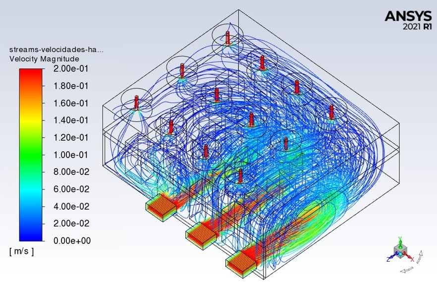
                <figcaption>Líneas de corriente, vista 3D</figcaption>
              </figure>
            </div>
          </div>

          <div class="credit-line">
            <b>Equipo — Informe de Avance II, 2022-1:</b> Carlos Mario Morales Ramírez, Cristian Alejandro Castrillón Ayala, Jorge Andrés León Valbuena, Juan Pablo Ariza Hernández, Julián Santiago Serrano Rincón, Nicolás David Ávila-Rey, Sara Valentina García Martínez y Sofía Holguín Briceño.<br>
            Profesor asesor: Aldo Germán Benavides Morán.
          </div>

          <div class="spinoff-card">
            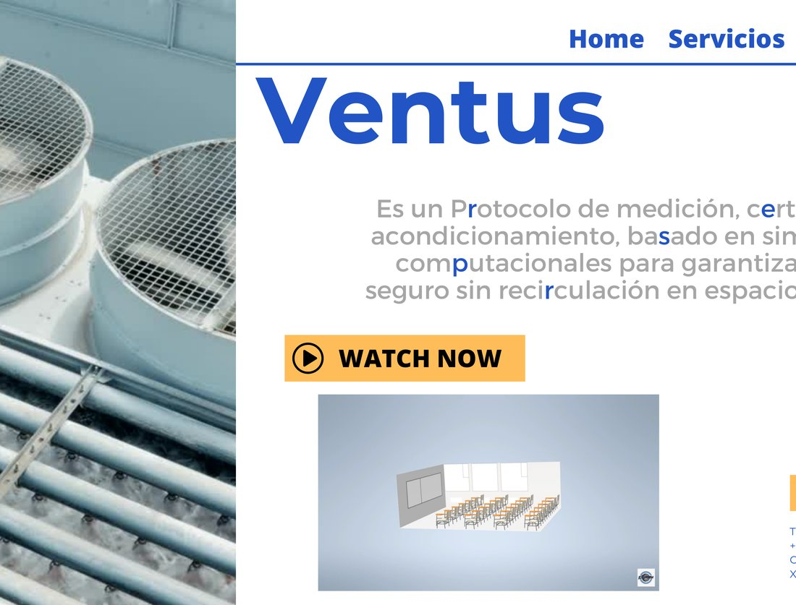
            <div class="spinoff-body">
              <span class="label" style="margin-bottom:0;">De la investigación al emprendimiento</span>
              <h3>Ventus</h3>
              <p>Bajo el programa UN Ingnova, el equipo desarrolló <b style="color:var(--fg)">Ventus</b>: un protocolo de medición, certificación y acondicionamiento de aire basado en las mismas simulaciones computacionales del proyecto, pensado para escalar la solución a aulas, oficinas y locales comerciales. La imagen muestra la primera iteración del sitio del proyecto, diseñada durante la fase de validación de modelo de negocio.</p>
            </div>
          </div>
        </div>

        <div class="timeline-item is-active">
          <div class="timeline-head">
            <span class="timeline-year">2025 – 2026</span>
            <span class="status-chip active">En curso</span>
          </div>
          <h3>Caracterización y puesta a punto de una turbina eólica Savonius-Darrieus para generación de energía renovable en el campus</h3>
          <span class="src">Convocatoria de Proyectos de Investigación de la Facultad de Ingeniería, 2025</span>
          <p style="margin-top:10px;color:var(--fg-muted);font-size:0.95rem;">Trabajo experimental: ensayos en túnel de viento, escaneo de geometrías, impresión 3D y simulación en Ansys.</p>
          <div class="proj-media">
            <figure>
              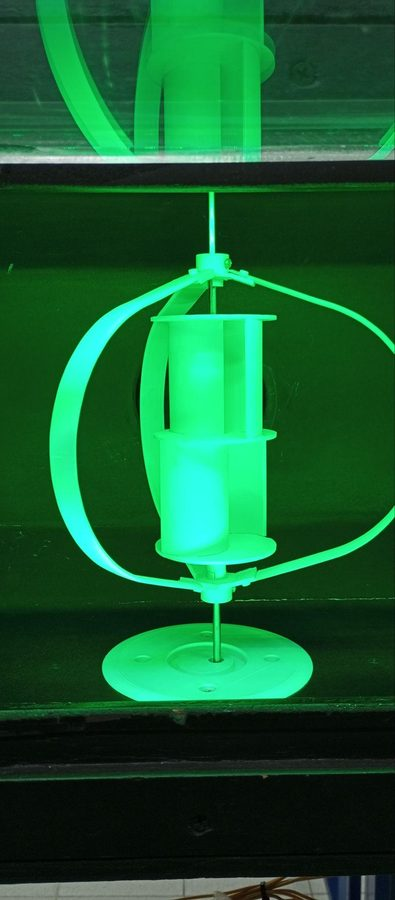
              <figcaption>Ensayo en túnel de viento</figcaption>
            </figure>
            <figure>
              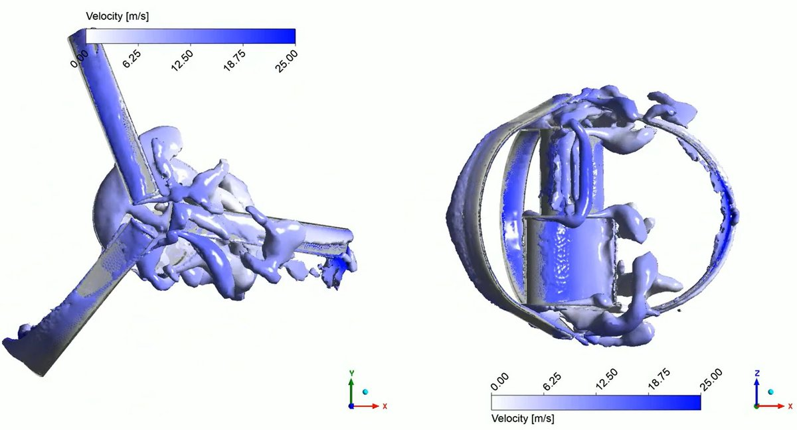
              <figcaption>Campo de velocidad · CFD en Ansys</figcaption>
            </figure>
            <figure>
              
              <figcaption>Prototipo a escala real, campus UNAL</figcaption>
            </figure>
          </div>

          <div class="media-block">
            <span class="cap">Simulación CFD en movimiento — ANSYS</span>
            <div class="video-grid">
              <figure class="video-figure">
                <video src="video/turbina-cfd.mp4" poster="img/turbina-cfd-poster.jpg" controls muted loop playsinline preload="metadata"></video>
                <figcaption>Superficie de iso-velocidad alrededor de los álabes en rotación</figcaption>
              </figure>
              <figure class="video-figure">
                <video src="video/turbina-vortices-cfd.mp4" poster="img/turbina-vortices-poster.jpg" controls muted loop playsinline preload="metadata"></video>
                <figcaption>Desprendimiento de vórtices, corte 2D del rotor</figcaption>
              </figure>
            </div>
          </div>
        </div>
      </div>
    </div>
  </section>
</div>

<div class="page" data-page="laboratorios" id="page-laboratorios">
  <section class="section" id="laboratorios">
    <div class="wrap">
      <div class="section-head">
        <span class="eyebrow">Infraestructura</span>
        <h2>Laboratorios y herramientas.</h2>
        <p class="max-prose" style="color:var(--fg-muted)">FLUMEX tiene registro activo en dos laboratorios de la Facultad de Ingeniería, además del instrumental de diseño y cómputo que usa en sus proyectos.</p>
      </div>
      <dl class="spec-list card">
        <div class="spec-row">
          <dt>Ensayos Hidráulicos (LEH)</dt>
          <dd><b>Túnel de viento de circuito cerrado.</b> Caracterización del perfil de velocidad y pruebas con modelos.</dd>
        </div>
        <div class="spec-row">
          <dt>Transferencia de Calor</dt>
          <dd>Prácticas y ensayos de ciencias térmicas, en apoyo a los proyectos de generación y transformación de energía del semillero.</dd>
        </div>
        <div class="spec-row">
          <dt>Diseño de Máquinas y Prototipos</dt>
          <dd><b>Túnel de viento de circuito abierto.</b> Pruebas con modelos a escala y visualización de flujo.</dd>
        </div>
        <div class="spec-row">
          <dt>Metrología Dimensional de Precisión</dt>
          <dd><b>Escaneo de geometrías</b> para la elaboración de modelos a escala.</dd>
        </div>
        <div class="spec-row">
          <dt>Herramientas de cómputo y manufactura</dt>
          <dd><b>Impresora 3D</b> (modelado por deposición fundida) y <b>workstation con licencia Ansys Research</b> (desde 2020).</dd>
        </div>
      </dl>
    </div>
  </section>

  <section class="section" id="metodologia">
    <div class="wrap">
      <div class="section-head">
        <span class="eyebrow">Cómo trabajamos</span>
        <h2>Reuniones, roles y convocatorias.</h2>
      </div>

      <div class="grid-2">
        <div class="card">
          <span class="label">Ritmo semanal</span>
          <p style="color:var(--fg)">Dos reuniones semanales: una interna entre integrantes y otra en conjunto con el profesor director, para revisar avances y coordinar tareas.</p>
        </div>
        <div class="card">
          <span class="label">Vinculación</span>
          <p style="color:var(--fg)">Convocatorias durante el primer mes y medio de cada semestre, con un periodo de prueba para los nuevos integrantes.</p>
        </div>
      </div>

      <div class="role-grid" style="margin-top:20px;">
        <div class="card">
          <span class="num">01</span>
          <h3>Líder</h3>
          <p>Unifica los puntos de vista del equipo, media las diferencias de opinión y mantiene el entusiasmo sobre las tareas.</p>
        </div>
        <div class="card">
          <span class="num">02</span>
          <h3>Moderador</h3>
          <p>Coordina cada reunión, otorga la palabra y dirige la discusión de forma organizada. El rol rota entre integrantes.</p>
        </div>
        <div class="card">
          <span class="num">03</span>
          <h3>Secretario</h3>
          <p>Redacta el acta de cada reunión y lleva el registro de asistencia del grupo.</p>
        </div>
      </div>

      <div class="note-block" style="margin-top:20px;">Difusión: FLUMEX organiza charlas y webinars una o dos veces por semestre para compartir los resultados de sus proyectos y fomentar el interés por las ciencias térmicas.</div>
    </div>
  </section>

</div>

<div class="page" data-page="integrantes" id="page-integrantes">
  <section class="section" id="integrantes">
    <div class="wrap">
      <div class="section-head">
        <span class="eyebrow">Estudiantes activos</span>
        <h2>Quién hace parte del semillero.</h2>
      </div>

      <div class="person-card">
        <div class="avatar badge" aria-hidden="true" style="display:flex;align-items:center;justify-content:center;font-family:var(--font-body);font-weight:800;font-size:1.3rem;color:var(--accent);">AB</div>
        <div>
          <h3>Aldo Germán Benavides Moran</h3>
          <span class="person-role">Profesor director · Depto. de Ingeniería Mecánica y Mecatrónica</span>
          <span class="person-mail">agbenavidesm@unal.edu.co</span>
        </div>
      </div>

      <div class="grid-3" style="margin-top:20px;">
        <div class="person-card">
          <div class="avatar badge" aria-hidden="true" style="display:flex;align-items:center;justify-content:center;font-family:var(--font-body);font-weight:800;font-size:1.15rem;color:var(--accent);">IG</div>
          <div>
            <h3>Isabella Gutiérrez Ávila</h3>
            <span class="person-role">Estudiante de pregrado</span>
            <span class="person-activity">Trabajo experimental en el laboratorio de hidráulica y el túnel de viento.</span>
          </div>
        </div>
        <div class="person-card">
          <div class="avatar badge" aria-hidden="true" style="display:flex;align-items:center;justify-content:center;font-family:var(--font-body);font-weight:800;font-size:1.15rem;color:var(--accent);">JP</div>
          <div>
            <h3>Juan David Pardo Aragón</h3>
            <span class="person-role">Estudiante de pregrado</span>
            <span class="person-activity">Trabajo experimental en túnel de viento. Desarrollo y prueba de sensores y componentes electrónicos.</span>
          </div>
        </div>
        <div class="person-card">
          <div class="avatar badge" aria-hidden="true" style="display:flex;align-items:center;justify-content:center;font-family:var(--font-body);font-weight:800;font-size:1.15rem;color:var(--accent);">JJ</div>
          <div>
            <h3>Juan José Jaramillo Casanova</h3>
            <span class="person-role">Estudiante de pregrado</span>
            <span class="person-activity">Manufactura de modelos a escala.</span>
          </div>
        </div>
        <div class="person-card">
          <div class="avatar badge" aria-hidden="true" style="display:flex;align-items:center;justify-content:center;font-family:var(--font-body);font-weight:800;font-size:1.15rem;color:var(--accent);">JG</div>
          <div>
            <h3>Juan Manuel Gómez Galvis</h3>
            <span class="person-role">Estudiante de pregrado</span>
            <span class="person-activity">Trabajo experimental en laboratorio. Desarrollo de planos y modelos a escala.</span>
          </div>
        </div>
        <div class="person-card">
          <div class="avatar badge" aria-hidden="true" style="display:flex;align-items:center;justify-content:center;font-family:var(--font-body);font-weight:800;font-size:1.15rem;color:var(--accent);">JN</div>
          <div>
            <h3>Juan Sebastián Niño Perico</h3>
            <span class="person-role">Estudiante de pregrado</span>
            <span class="person-activity">Modelado computacional en CFD.</span>
          </div>
        </div>
        <div class="person-card">
          <div class="avatar badge" aria-hidden="true" style="display:flex;align-items:center;justify-content:center;font-family:var(--font-body);font-weight:800;font-size:1.15rem;color:var(--accent);">MM</div>
          <div>
            <h3>Manuel Alejandro Maya León</h3>
            <span class="person-role">Estudiante de pregrado</span>
            <span class="person-activity">Trabajo experimental en el túnel de viento del laboratorio de hidráulica. Elaboración de modelos a escala.</span>
          </div>
        </div>
        <div class="person-card">
          <div class="avatar badge" aria-hidden="true" style="display:flex;align-items:center;justify-content:center;font-family:var(--font-body);font-weight:800;font-size:1.15rem;color:var(--accent);">OZ</div>
          <div>
            <h3>Omar Santiago Zuleta Romero</h3>
            <span class="person-role">Estudiante de pregrado</span>
            <span class="person-activity">Modelos computacionales de la fluido-dinámica de turbomaquinaria. Apoyo en tareas experimentales.</span>
          </div>
        </div>
        <div class="person-card">
          <div class="avatar badge" aria-hidden="true" style="display:flex;align-items:center;justify-content:center;font-family:var(--font-body);font-weight:800;font-size:1.15rem;color:var(--accent);">SR</div>
          <div>
            <h3>Santiago Alejandro Ramírez Cepeda</h3>
            <span class="person-role">Estudiante de pregrado</span>
            <span class="person-activity">Montajes en el laboratorio de hidráulica. Caracterización de turbomaquinaria.</span>
          </div>
        </div>
        <div class="person-card">
          <div class="avatar badge" aria-hidden="true" style="display:flex;align-items:center;justify-content:center;font-family:var(--font-body);font-weight:800;font-size:1.15rem;color:var(--accent);">SV</div>
          <div>
            <h3>Sofía Vera Acosta</h3>
            <span class="person-role">Estudiante de pregrado</span>
            <span class="person-activity">Diseño y fabricación de piezas. Trabajo experimental en túnel de viento. Elaboración de informes técnicos.</span>
          </div>
        </div>
        <div class="person-card">
          <div class="avatar badge" aria-hidden="true" style="display:flex;align-items:center;justify-content:center;font-family:var(--font-body);font-weight:800;font-size:1.15rem;color:var(--accent);">AD</div>
          <div>
            <h3>Andrés Felipe Delgadillo Lozano</h3>
            <span class="person-role">Integrante nuevo</span>
            <span class="person-activity">Apoyo en varios proyectos del semillero mientras se organizan los frentes de trabajo. Interesado en aportar en tareas de CFD y aerodinámica.</span>
          </div>
        </div>
        <div class="person-card">
          <div class="avatar badge" aria-hidden="true" style="display:flex;align-items:center;justify-content:center;font-family:var(--font-body);font-weight:800;font-size:1.15rem;color:var(--accent);">JQ</div>
          <div>
            <h3>Juan Carlos Quiroga Candela</h3>
            <span class="person-role">Integrante nuevo</span>
            <span class="person-activity">Apoyo en varios proyectos del semillero mientras se organizan los frentes de trabajo.</span>
          </div>
        </div>
        <div class="person-card">
          <div class="avatar badge" aria-hidden="true" style="display:flex;align-items:center;justify-content:center;font-family:var(--font-body);font-weight:800;font-size:1.15rem;color:var(--accent);">JM</div>
          <div>
            <h3>José Esteban Mendieta Merchán</h3>
            <span class="person-role">Integrante nuevo</span>
            <span class="person-activity">Apoyo en varios proyectos del semillero mientras se organizan los frentes de trabajo.</span>
          </div>
        </div>
        <div class="person-card">
          <div class="avatar badge" aria-hidden="true" style="display:flex;align-items:center;justify-content:center;font-family:var(--font-body);font-weight:800;font-size:1.15rem;color:var(--accent);">LR</div>
          <div>
            <h3>Laura Sofía Ruiz Constante</h3>
            <span class="person-role">Integrante nuevo</span>
            <span class="person-activity">Apoyo en varios proyectos del semillero mientras se organizan los frentes de trabajo.</span>
          </div>
        </div>
        <div class="person-card">
          <div class="avatar badge" aria-hidden="true" style="display:flex;align-items:center;justify-content:center;font-family:var(--font-body);font-weight:800;font-size:1.15rem;color:var(--accent);">TM</div>
          <div>
            <h3>Tito Samuel Méndez Orjuela</h3>
            <span class="person-role">Integrante nuevo</span>
            <span class="person-activity">Apoyo en varios proyectos del semillero mientras se organizan los frentes de trabajo.</span>
          </div>
        </div>
      </div>
    </div>
  </section>

  <section class="section" id="huella">
    <div class="wrap">
      <div class="section-head">
        <span class="eyebrow">Trayectoria</span>
        <h2>Estudiantes que han dejado huella.</h2>
      </div>

      <div class="grid-3">
        <div class="person-card">
          <div class="avatar badge" aria-hidden="true" style="display:flex;align-items:center;justify-content:center;font-family:var(--font-body);font-weight:800;font-size:1.15rem;color:var(--accent);">AR</div>
          <div>
            <h3>Andrés Camilo Ricaurte Abadía</h3>
            <span class="person-role">Estudiante de pregrado</span>
            <span class="person-activity">Apoyo en ensayos de túnel de viento y simulaciones computacionales de dinámica de fluidos.</span>
          </div>
        </div>
        <div class="person-card">
          <div class="avatar badge" aria-hidden="true" style="display:flex;align-items:center;justify-content:center;font-family:var(--font-body);font-weight:800;font-size:1.15rem;color:var(--accent);">CK</div>
          <div>
            <h3>Carlos Iván Kryksman Valbuena</h3>
            <span class="person-role">Estudiante de pregrado</span>
            <span class="person-activity">Modelado computacional. Búsqueda de convocatorias.</span>
          </div>
        </div>
        <div class="person-card">
          <div class="avatar badge" aria-hidden="true" style="display:flex;align-items:center;justify-content:center;font-family:var(--font-body);font-weight:800;font-size:1.15rem;color:var(--accent);">CM</div>
          <div>
            <h3>Carlos Mario Morales Ramírez</h3>
            <span class="person-role">Estudiante de posgrado</span>
            <span class="person-activity">Apoyo logístico del semillero. Modelado computacional en CFD.</span>
          </div>
        </div>
        <div class="person-card">
          <div class="avatar badge" aria-hidden="true" style="display:flex;align-items:center;justify-content:center;font-family:var(--font-body);font-weight:800;font-size:1.15rem;color:var(--accent);">EM</div>
          <div>
            <h3>Eduin Andrés Mejía Rodríguez</h3>
            <span class="person-role">Estudiante de pregrado</span>
            <span class="person-activity">Manufactura de modelos a escala. Instrumentación para pruebas de laboratorio.</span>
          </div>
        </div>
      </div>

      <p style="color:var(--fg-muted);max-width:70ch;margin-top:28px;margin-bottom:14px;">También hicieron parte del semillero como equipo del proyecto de ventilación anti-COVID:</p>
      <div class="tag-grid">
        <span class="tag-pill">Sofía Holguín-Briceño</span>
        <span class="tag-pill">Jorge Andrés León Valbuena</span>
        <span class="tag-pill">Andrés Eduardo Penagos-Carranza</span>
        <span class="tag-pill">Brian David Zapata-Henao</span>
        <span class="tag-pill">Camilo Jesús Marín-Jiménez</span>
        <span class="tag-pill">Cristian Alejandro Castrillón-Ayala</span>
        <span class="tag-pill">Cristian Alejandro Hernández-López</span>
        <span class="tag-pill">Juan Felipe Rodríguez-Navarro</span>
        <span class="tag-pill">Juan Pablo Ariza-Hernández</span>
        <span class="tag-pill">Julián Ricardo Rodríguez-Suesca</span>
        <span class="tag-pill">Julián Santiago Serrano-Rincón</span>
        <span class="tag-pill">Nicolás David Ávila-Rey</span>
        <span class="tag-pill">Sara Valentina García-Martínez</span>
        <span class="tag-pill">Sebastián Cardona-Pesca</span>
        <span class="tag-pill">Sergio Daniel Cardozo-Franco</span>
      </div>
    </div>
  </section>

  <section class="section" id="articulacion">
    <div class="wrap">
      <div class="section-head">
        <span class="eyebrow">Articulación</span>
        <h2>No trabajamos solos.</h2>
      </div>
      <div class="grid-2">
        <div class="card">
          <h3>GNUM — Grupo de modelado y métodos numéricos en ingeniería</h3>
          <p>FLUMEX está vinculado a GNUM y comparte con el grupo el trabajo en métodos numéricos aplicados a la solución de ecuaciones diferenciales para el modelado de materiales y procesos. El director de FLUMEX, Aldo Germán Benavides Moran, también hace parte de GNUM.</p>
        </div>
        <div class="card">
          <h3>GRIEQUI y OCEÁNICOS — Sede Medellín</h3>
          <p>Colaboración orientada a formar a los integrantes en tecnologías para el aprovechamiento de la energía oceánica, fortaleciendo el modelado de fluidos y el desarrollo de tecnologías innovadoras entre sedes.</p>
        </div>
        <div class="card">
          <h3>PAI+ — Universidad Autónoma de Occidente</h3>
          <p>Colaboración con el grupo PAI+ de la Universidad Autónoma de Occidente, en Cali.</p>
        </div>
        <div class="card">
          <h3>Departamento de Ingeniería Mecánica — Universidad de los Andes</h3>
          <p>Colaboración con el Departamento de Ingeniería Mecánica de la Universidad de los Andes.</p>
        </div>
      </div>
    </div>
  </section>
</div>

<div class="page" data-page="unete" id="page-unete">
  <section class="section" id="futuro">
    <div class="wrap">
      <div class="section-head">
        <span class="eyebrow">Lo que viene</span>
        <h2>Próximos pasos.</h2>
      </div>
      <ul class="obj-list card">
        <li><span class="mark"></span><p>Terminar la caracterización de la turbina Savonius-Darrieus y explorar su integración como fuente de energía renovable en el campus.</p></li>
        <li><span class="mark"></span><p>Fortalecer la línea de energía oceánica junto con los grupos GRIEQUI y OCEÁNICOS de la sede Medellín.</p></li>
        <li><span class="mark"></span><p>Mantener al menos un artículo de divulgación científica publicado por año y una presentación en congreso nacional o internacional.</p></li>
        <li><span class="mark"></span><p>Abrir nuevas convocatorias semestrales para vincular estudiantes a los proyectos en curso y a los que vienen.</p></li>
      </ul>
    </div>
  </section>

  <section class="section" id="unete">
    <div class="wrap grid-2" style="align-items:start;">
      <div>
        <div class="section-head">
          <span class="eyebrow">Únete</span>
          <h2>Cómo vincularte a FLUMEX.</h2>
          <p class="max-prose" style="color:var(--fg-muted)">FLUMEX abre convocatoria para nuevos integrantes cada semestre. Así funciona el proceso.</p>
        </div>
      </div>
      <ol class="step-list card">
        <li><div><b>Postúlate en la convocatoria semestral</b><span>Se abre durante el primer mes y medio de cada semestre.</span></div></li>
        <li><div><b>Periodo de prueba</b><span>Los nuevos integrantes se integran a las reuniones y proyectos en curso.</span></div></li>
        <li><div><b>Asiste a las reuniones semanales</b><span>Jueves y viernes, con espacio para presentar avances, proponer proyectos y compartir conocimiento.</span></div></li>
        <li><div><b>Toma un rol</b><span>Los roles de moderador y secretario rotan entre los integrantes del grupo.</span></div></li>
      </ol>
    </div>
  </section>
</div>

<div class="page" data-page="contacto" id="page-contacto">
  <section class="section" id="contacto">
    <div class="wrap">
      <div class="section-head">
        <span class="eyebrow">Contacto</span>
        <h2>Escríbenos.</h2>
      </div>
      <div class="contact-row">
        <div>
          <span class="label" style="margin-bottom:4px;">Contacto general del semillero</span>
          <span class="addr">aeroflumex_bog@unal.edu.co</span>
        </div>
        <button class="copy-btn" data-copy="aeroflumex_bog@unal.edu.co" onclick="copyMail(this)">Copiar correo</button>
      </div>
      <div class="contact-row">
        <div>
          <span class="label" style="margin-bottom:4px;">Dirección — Aldo Germán Benavides Moran</span>
          <span class="addr">agbenavidesm@unal.edu.co</span>
        </div>
        <button class="copy-btn" data-copy="agbenavidesm@unal.edu.co" onclick="copyMail(this)">Copiar correo</button>
      </div>
      <div class="contact-row">
        <div>
          <span class="label" style="margin-bottom:4px;">Ubicación</span>
          <span class="addr" style="font-family:var(--font-body);">Universidad Nacional de Colombia, sede Bogotá — Facultad de Ingeniería, Depto. de Ingeniería Mecánica y Mecatrónica</span>
        </div>
      </div>
    </div>
  </section>
</div>

</main>

<footer>
  <div class="wrap footer-row">
    
    <div class="footer-meta">
      FLUMEX · Semillero código 60<br>
      Facultad de Ingeniería · Sede Bogotá
    </div>
  </div>
</footer>

<script>
function copyMail(btn){
  var text = btn.getAttribute('data-copy');
  function done(){
    var original = btn.textContent;
    btn.textContent = 'Copiado';
    btn.setAttribute('data-copied','true');
    setTimeout(function(){
      btn.textContent = original;
      btn.removeAttribute('data-copied');
    }, 1800);
  }
  try{
    navigator.clipboard.writeText(text).then(done, fallbackCopy);
  }catch(e){
    fallbackCopy();
  }
  function fallbackCopy(){
    var ta = document.createElement('textarea');
    ta.value = text;
    ta.style.position = 'fixed';
    ta.style.opacity = '0';
    document.body.appendChild(ta);
    ta.focus();
    ta.select();
    try{ document.execCommand('copy'); }catch(e){}
    document.body.removeChild(ta);
    done();
  }
}

(function(){
  var pages = Array.prototype.slice.call(document.querySelectorAll('.page'));
  var navLinks = Array.prototype.slice.call(document.querySelectorAll('[data-page]'));
  var validPages = pages.map(function(p){ return p.getAttribute('data-page'); });

  var titles = {
    'inicio': 'FLUMEX',
    'quienes-somos': 'Quiénes somos · FLUMEX',
    'proyectos': 'Proyectos · FLUMEX',
    'laboratorios': 'Laboratorios · FLUMEX',
    'integrantes': 'Integrantes · FLUMEX',
    'unete': 'Únete · FLUMEX',
    'contacto': 'Contacto · FLUMEX'
  };

  function pathFor(name){
    return name === 'inicio' ? '/' : '/' + name + '/';
  }
  function nameFromPath(path){
    var clean = path.replace(/^\/|\/$/g, '');
    return clean === '' ? 'inicio' : clean;
  }

  function showPage(name, scroll){
    if(validPages.indexOf(name) === -1){ name = 'inicio'; }
    pages.forEach(function(p){
      p.classList.toggle('is-active', p.getAttribute('data-page') === name);
    });
    navLinks.forEach(function(a){
      var match = a.getAttribute('data-page') === name;
      a.classList.toggle('is-current', match);
      if(match){ a.setAttribute('aria-current','page'); } else { a.removeAttribute('aria-current'); }
    });
    document.title = titles[name] || 'FLUMEX';
    if(scroll !== false){ window.scrollTo(0,0); }
  }

  function go(name){
    showPage(name);
    history.pushState({page:name}, '', pathFor(name));
  }

  document.addEventListener('click', function(e){
    var a = e.target.closest ? e.target.closest('a[data-page]') : null;
    if(!a) return;
    var name = a.getAttribute('data-page');
    if(validPages.indexOf(name) === -1) return;
    e.preventDefault();
    go(name);
  });

  window.addEventListener('popstate', function(){
    showPage(nameFromPath(location.pathname));
  });

  // A direct visit or refresh on a path like /proyectos/ hits GitHub Pages' 404.html,
  // which redirects here as /?p=%2Fproyectos%2F — restore the clean path before rendering.
  var redirectParam = new URLSearchParams(location.search).get('p');
  if(redirectParam){
    history.replaceState(null, '', redirectParam);
  }

  showPage(nameFromPath(location.pathname), false);
})();
</script>
